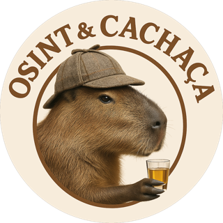
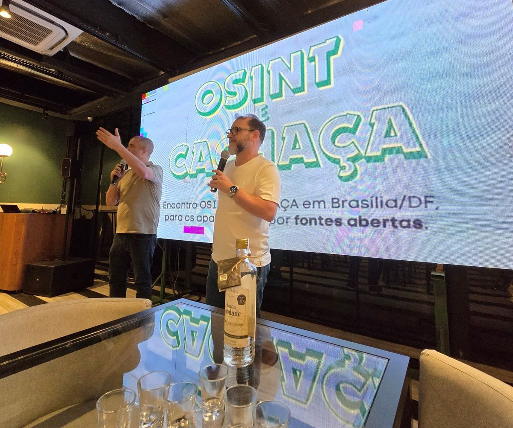
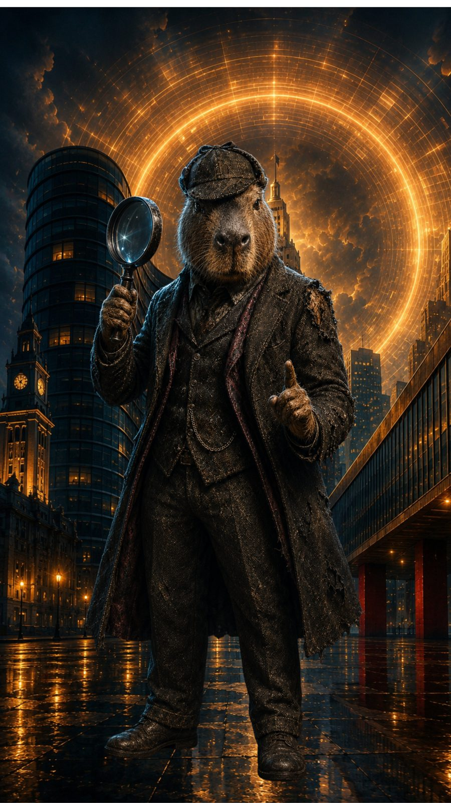
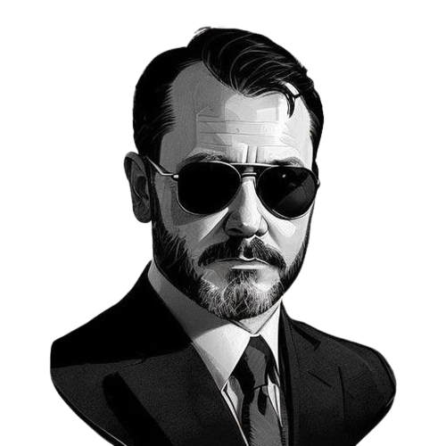

BSides Brasília · Digital Investigation & OSINT Village
Prata
Purinha
por edição
Logo nas peças digitais e no telão, agradecimento na abertura.
Saiba mais →
Comunidade brasileira de OSINT
Encontros presenciais de inteligência de fontes abertas, com charlas curtas, conversa franca e uma boa cachaça brasileira. Desde 2023, em todo o país.
Fontes abertas. Mentes abertas. Impacto real.
O encontro
Especialistas e entusiastas de OSINT, investigação, inteligência e segurança se reúnem num bar para trocar experiências num ambiente de confiança. Sem palco distante, sem crachá de hierarquia: policiais, promotores, analistas de empresas, pesquisadores e estudantes dividem a mesma mesa.

Como é uma noite
Horários de referência; cada cidade ajusta ao local. Evento para maiores de 18 anos.
Edições
A capivara já brindou em boa parte do país. Quer um encontro na sua cidade? Fale com a gente.
Próximas edições
Datas, locais e inscrições saem antes na Comunidade no WhatsApp, no Instagram e no LinkedIn.
Na estrada com a comunidade
O Osint & Cachaça também vai aonde a comunidade está: monta trilhas de investigação digital, faz edições especiais e divulga conferências de segurança e OSINT pelo país.
Organiza um evento de OSINT, investigação digital ou segurança? Chame a capivara.

Nosso mascote
Capivara detetive do OSINTVERSO, Tino é o mascote do Osint & Cachaça. Representa a ideia de que inteligência também se constrói em comunidade: uma boa conversa aproxima pessoas e transforma encontros informais em conhecimento útil.
A escolha não é por acaso: a capivara, maior roedor do mundo, está presente em todos os estados brasileiros. Como a comunidade.
“Bora conversar e tomar uma.”
Chamada para charlas
As charlas têm 15 minutos e falam de prática: investigações (sem dados sensíveis), técnicas, ferramentas, OPSEC, geolocalização, fraudes, threat intelligence, aspectos jurídicos da prova digital. Iniciantes são bem-vindos.
Propor uma charlaPatrocínio
Presença de marca sem descaracterizar a experiência: público qualificado, confiança antes da venda e contatos apenas com consentimento.
Prata
por edição
Logo nas peças digitais e no telão, agradecimento na abertura.
Saiba mais →Guardada
por edição
Banner, interação direta, sorteio com QR Code e pitch de 2 minutos.
Saiba mais →Ouro
por edição
Charla técnica de 15 minutos e exclusividade de setor.
Saiba mais →Coapresentação
por edição
“Osint & Cachaça, apresentado por” sua marca, com boas-vindas no palco.
Saiba mais →Diamante
3 edições
Premium em três edições, lounge VIP e vídeo de melhores momentos.
Saiba mais →Ativações avulsas: rodada por conta da marca (shout a round), sorteio de brindes e divulgação nos grupos da comunidade.
Valores, contrapartidas e o media kit completo são enviados a quem demonstrar interesse.
Comunidades parceiras: OsintHunters Brasil, Secops Summit, DICB e os eventos da seção Apoios.
Cadastros
Quer subir no balcão com uma charla ou levar sua marca a uma edição? Deixe seus dados: a organização responde por e-mail.
Redes sociais
Agenda das edições, fotos, dicas de OSINT e os eventos que apoiamos saem primeiro nas redes.
Conexões
O Osint & Cachaça faz parte de uma rede maior: os portais OsintHunters Brasil e OsmOSINT, a Digital Investigation Village nas conferências e a Osint Connection, a comunidade que reúne no WhatsApp os grupos de OSINT parceiros.
osinthunters.com.br
O portal brasileiro de OSINT: guias, ferramentas, vídeos e dicas de segurança digital, com conteúdo prático para quem investiga e para quem quer se proteger de golpes.
Radares OSINT: Drogas · Crimes cibernéticos · Aliciamento online
Visitar o OsintHunters Brasilosmosint.com.br
Plataforma de ensino e prática de inteligência de fontes abertas: metodologia de investigação, limites legais e éticos, ferramentas e casos reais, com a pergunta que guia tudo: até onde eu posso ir, mesmo sendo fonte aberta?
Projeto parceiro
A trilha de investigação digital que leva OSINT, evidência digital, DFIR e IA aplicada à investigação para dentro das conferências de segurança da comunidade. Uma sala inteira de palestras, com moderação de quem vive o tema, e o Osint & Cachaça fechando a noite.
Outros projetos na rede
Comunidade no WhatsApp
Uma só comunidade que integra os grupos de OSINT parceiros. Entrando nela, você encontra:
Cursos de OSINT
A conversa no balcão desperta a curiosidade; a formação vem com a WB Educação, parceira do Osint & Cachaça. Montamos uma trilha com os cursos de fontes abertas do catálogo, do básico à Pós em OSINT.
1 · Primeiros passos
Conceitos, ambiente seguro e as primeiras técnicas.
2 · Formação
O curso completo de OSINT e as disciplinas que o sustentam.
3 · Especialização
Aprofundamento por rede, tipo de dado e cenário.
4 · Pós-graduação
Inteligência e Investigação em Fontes Abertas: especialização com a Faculdade FABIN, reconhecida pelo MEC: 365 horas, aulas ao vivo e gravadas, e 8 seções com certificação intermediária.
Também na WB: Pós em Investigação Digital · Pós em IA Aplicada à Investigação
Catálogo completo em wbeduca.com.br. Valores, turmas e datas conforme a página de cada curso.

Idealização nacional
Delegado e ex-Chefe da Polícia Civil do RS, mestre e doutor em Direito pela Universidade La Salle, cofundador da WB Educação e da Polímata Inc. Cada cidade tem anfitriões locais que fazem o encontro acontecer.
Contato
Para participar, propor uma charla, levar o encontro à sua cidade ou apoiar uma edição, fale com a organização.
Aponte a câmera para entrar na Comunidade no WhatsApp
Entrar na Comunidade